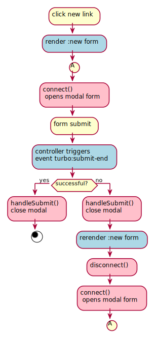

A stimulus controller for Bootstrap v5 Modal
-
Source Repository: https://github.com/swobspace/rails-playground
-
Bootstrap v5 Modal: https://getbootstrap.com/docs/5.1/components/modal/
-
Rails Playground: used in lists
The goal: get bootstrap modal working with turbo_stream
Activity Diagram

Figure 1. activity diagram for modal forms, stimulus and @hotwire/turbo
User actions are colored in yellow, rails controller action colored in blue and stimulus calls are colored in pink.
After a form submit there is no disconnect() from the stimulus controller. In case of errors rails renders :new, and this leads to a disconnect() before reconnect() since turbo-stream rewrites the content of the modal turbo_frame_tag. In case of success we use the event turbo:submit-end to close the modal. In case of errors you can use disconnect() too.
|
Models
class List < ApplicationRecord
has_many :tasks, -> { order(:position) }, dependent: :restrict_with_error
validates_presence_of :name
def to_s
"#{name}"
end
endclass Task < ApplicationRecord
default_scope { order(:position) }
belongs_to :list, optional: false
acts_as_list scope: :list
validates_presence_of :subject
endViews
The following snippets shows only the relevant parts. For the full views please have a look as rails-playground/app/components/modal_component.* and rails-playground/app/views/tasks.
Layout: a generic turbo_frame_tag
/app/views/layouts/application.html.erb
<body>
<%= turbo_frame_tag "modal" %>
...
</body>New and edit views
We use a ViewComponent to dry the endless repeating modal html stuff in each #new or #edit view.
app/views/tasks/new.html.erb; same goes to edit.html.erb
<%= render ModalComponent.new(title: 'Edit Task') do %>
<%= render "form", task: @task %>
<% end %>app/components/modal_component.html.erb
<%= turbo_frame_tag "modal" do %> (1)
<div class="modal" tabindex="-1"
id="modalComponent" (2)
data-controller="modal" (3)
data-action="turbo:submit-end->modal#handleSubmit" (4)
>
<div class="modal-dialog">
<div class="modal-content">
<div class="modal-header">
<h5 class="modal-title"><%= @title %></h5> (5)
<button type="button" class="btn-close" data-bs-dismiss="modal" aria-label="Close"></button>
</div>
<div class="modal-body">
<%= content %> (6)
</div>
</div>
</div>
</div>
<% end %>| 1 | include the turbo_frame tag modal |
| 2 | don’t forget a unique id for this modal |
| 3 | initialize modal controller |
| 4 | handle successful form response → close modal via modal#handleSubmit |
| 5 | title to be set in ModalComponent.new(title: …) |
| 6 | here goes the block (content instead of ruby’s yield in ViewComponent) |